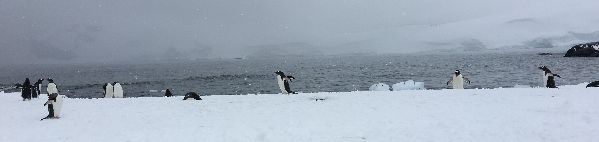

Bio
Helena Edelson is originally from Manhattan, where she started playing classical violin at the age of three and studied with teachers at Juliard. She began performing in orchestras and ensembles at the age of 6. She continued to study music with Gabriel Banat of the NY Philharmonic, later performing at the Tanglewood Institute with Leonard Bernstein, then began her undergraduate degree at Boston University as a music major. Studying music and performing in ensembles developed her awareness of systems and complementary interacting components at a very young age.
She soon switched to earn a Bachelor’s degree focusing around ecology, energy pathways in systems and engineering sustainable biological systems. After earning her degree, Helena moved up to Fairbanks, Alaska to continue her academic research and study Arctic Wolves and their ecosystem. She unexpectedly spent a few years doing expeditions and ultra-marathon races in the sub-arctic and other areas around the world.  In 2001 she began her software engineering career. Formerly a Principal Engineer at Lightbend and member of the Akka team, she worked on all areas of Akka but mainly cluster; at Apple as Senior Software Engineer working on distributed data, analytics and machine learning at massive scale; VP of Product Engineering at Tuplejump building a multi-tenant stream analysis machine learning platform; at CrowdStrike as a Senior Cloud Engineer working on cloud-based realtime Cyber Security threat analysis; and Senior Cloud Engineer at VMware automating cloud infrastructure; and at SpringSource (now Pivotal) on open source Spring Integration and messaging.
In early 2020 Helena left her professional career in Tech behind to pursue a Master of Science degree in Environmental Science for interdisciplinary research on Snow Leopards and endangered species in general, in the time of climate change, using complex adaptive systems and aerial robotics.
Helena is an international conference speaker and committer to many open source projects including Akka, FiloDB and the Spark Cassandra Connector.
- The Snow Leopard Network
- The Society for Conservation Biology
- Arctic Research Consortium of the United States
- The Wildlife Society
- The Wildlife Society - Wyoming Chapter
- The Wildlife Society - Central Mountains and Plains Chapter
- The Wildlife Society - Climate Change and Wildlife Working Group
- The Wildlife Society - Hunting, Trapping, and Conservation Working Group
- The Wildlife Society - Drone Working Group
- The Wildlife Society - Wildlife Damage Working Group
- The Wildlife Society - Biometrics Working Group
- British Ecological Society